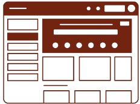
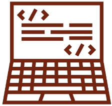
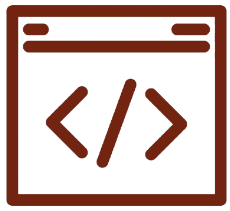
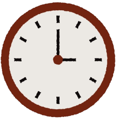

Frontend Web Developer · UI/UX Designer
A Frontend Web Developer and UI/UX Designer passionate about crafting intuitive, user-centered interfaces that blend clean aesthetics with seamless functionality. I leverage UX principles to enhance usability and engagement — improving user interaction by up to 75%.
I excel in building responsive, high-performance frontend applications using modern JavaScript frameworks and translating Figma designs into pixel-perfect, accessible web experiences. I have foundational knowledge in backend technologies to support seamless collaboration across the full development cycle.

Design Tools
Frontend Dev
Tools & PlatformsTechnical communication, explaining complex ideas simply, and communicating effectively with non-technical users.

Time ManagementPrioritization, meeting deadlines, and handling multiple tasks simultaneously under pressure.
Cross-functional collaboration and knowledge sharing across diverse development teams.
Logical thinking, troubleshooting under pressure, and risk assessment for complex systems.
Willingness to learn new technologies, adapting to system changes, and openness to feedback.
Ethical decision-making, confidentiality handling, and accountability in all professional settings.
A snapshot of who I am, where I studied, what I build with, and where I'm headed.
I'm Cassandra Aubrey R. Arcilla, a Frontend Web Developer and UI/UX Designer based in Angeles City, Philippines. I discovered my passion for web development through a fascination with how thoughtful design and clean code can turn complex ideas into experiences people genuinely enjoy using. I approach every project with a user-first mindset — asking not just "does it work?" but "does it feel right?"
Beyond the screen, I'm a continuous learner who invests in staying current with industry trends, earning credentials across web development, cloud computing, digital marketing, and analytics. I believe that great digital products live at the intersection of technical precision, visual clarity, and human empathy — and that's the intersection I aim to work in every day.